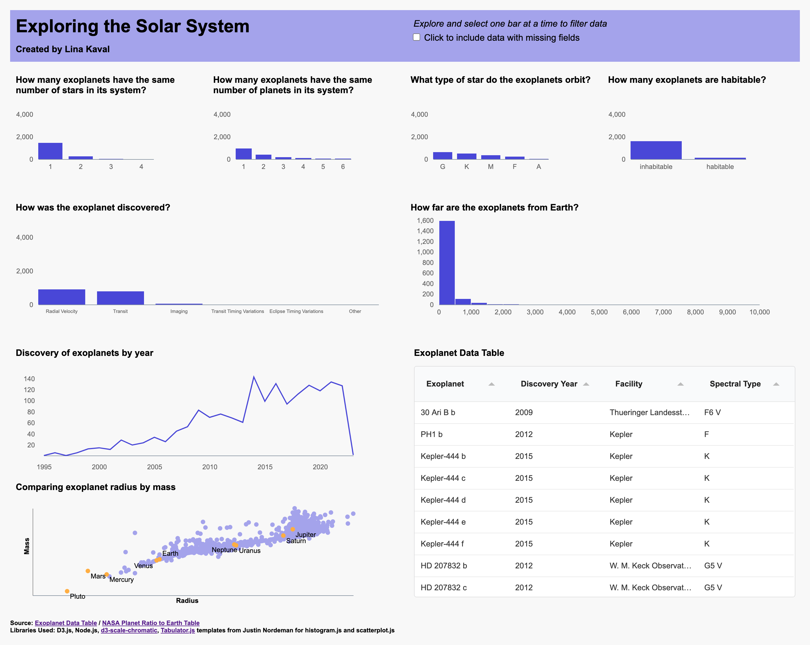

Project 1 - Visualizing NASA Exoplanet Data for CS 5124
Introduction
The point of this project was to be able to interact with a dashboard consisting of data from NASA's exoplanet research. Many exoplanets are being discovered every year, and while NASA has this information in tabular form, it can be hard for people to understand questions such as "How far is this exoplanet from us?", "How big are exoplanets compared to Earth?". My dashboard can answer these questions, as well as other questions someone may have.
The Data
The data was sourced from a public data repository on exoplanets. However, at first glance, it was hard to understand what the column names were supposed to be (ex: sy_snum, pl_rade). I relied on the documentation page to understand what each column was supposed to represent and the units associated with the data.
I also referenced this page to find the radius and mass of the planets within our system. It was confusing at first, since I wasn't sure what an Earth radius was. I learned a lot about the ways of describing planets through my research.
Sketching
I found it incredibly useful to sketch my designs and determine which columns would be associated with each chart. I am normally someone who likes to dive in and start working, but sketching my data helped me realize what limitations I would face before I would face them.
Initial Sketch
When I was first looked at this assignment, I thought "wow, there will be a lot of charts I have to put on one page." However, in this sketch, it looked like everything would fit, and even have left over space! Sad to say, that did not happen. However, I referred to this as I started positioning my charts as I build them.
Second iteration of sketches
After creating all my bar charts and simpler charts, I realized that especially for my line chart, scatterplot, and discovery methods barchart, it made more sense to spread out the data. These charts had longer x-axes so that the data wouldn't be so scrunched up, which also makes it easier for the user to read.
Sketch of System Browser
While I did not get around to completing the Exoplanet System Browser the way I wanted, I had thought about what the layout should look like.
Visualization Components
Full Dashboard View
Barcharts
The visualizations below all use the barchart.js class. Each barchart is capable of being clicked on in order to filter data and update with the same data on the rest of the bar charts. Hovering on the bars displays the data of how many exoplanets belong to that category. Although it may have been a better idea to add a y-axis label, I thought it would look to clunky - and would not have meant much since all of my barcharts had the same y-axis units. Instead, I opted to make my chart titles very specific and framed as a question, so that the user could more easily understand what I am trying to show here.
Another design decision I made was to filter out all rows that had missing values for certain fields. Since all of my visualizations are connected, I thought it could be misleading to the user if, for instance, there are only 1000 total exoplanets with valid star types, while there are 3000 total exoplanets with habitable/inhabiltable data. The user may be confused why there are different counts of exoplanets. To give my users the options of seeing all exoplanets, with the knowledge that there could be missing data, I added a checkbox to the top of my page where users can toggle whether to use all data or not.
Histogram
The visualization below uses the histogram.js class. To create cohesion across my visualizations, I made this histogram the same color as my barcharts. Similar to the barchart, hovering over the bar shows a description of the data and the count of planets. The histogram is also hooked up to the user's click filtering and my custom mising data filter. I decided to create a histogram with 20 bins, unlike the default 70, since having that many bars is not readable to the user.

Linechart
The visualization below uses the linechart.js class. This was modified from the example provided by the instructor. Similarly with the barchart and histograms, I did not clutter my chart with axis titles, since reading the title will quickly inform the user as to what the linechart means. When a user hovers over the chart, the year and number of exoplanets can be viewed. The filters also apply to the linechart.
Scatterplot
The visualization below uses the scatterplot.js class. Each exoplanet is plotted by the log of its radius and the log of its mass. Additionally, I sourced info for the planets in our solar system and added that to my scatterplot, shown in orange. When a user hovers over a circle, the circle darkens and the tooltip shows up, showing the user data on the exoplanet they selected. Clicking on the data point will open up the Exoplanet System Browser, which will be discussed further in a later section.
Table
The visualization below uses the table.js class. This is a class I created to handle using the Tabulator library, for both loading the data in and creating the table. Although another option was to create an html table from scratch, using a library makes it easier to deal with the formatting - and not have to "reinvent the wheel". The arrows allow the user to sort the data from descending or ascending. Each row contains information for each unique exoplanet. When I was considering what data to show here, I decided to focus on the qualitative variables of the data - especially since plenty of quantitative data is being communicated through the other visualizations.
Exoplanet System Browser
The visualization below shows data for an individual exoplanet, if a table row or scatterplot data point is clicked. THe popup is made of a modal that has multiple svg elements inside it to display the data. The top left features the exoplanet name large and in bold, to make it easier for the user to quickly see what data they are viewing currently. The top left corner also shows other data about the system, stars, and planets.
Next is the main visualization of the planet and its sun. The sun is colored according to the star type, as certain spectral types are associated with different colors, as can be seen from this source. A legend is in the section below to help the user identify the spectral type. Similarly, the exoplanet is colored - however, this time, because there is no associated color with these planets, I used a categorical color theme, using this library. The orbit can be seen visually around the sun, with the planet along the orbit. I added labels so that the user can discern which is which.
In the bottom left corner, I added disclaimers for the user to read so that they don't assume certain things about my visualization. For example, the sun and planet are not scaled to each other. While that was one of the A goals, I did not have time to get to it, but thought it would be best for the user to understand that instead of being misled.
At the very bottom is my data section. This includes the two legends I previously mentioned, and other information about the system, star, and exoplanet that I thought would be useful to the user.
Discoveries
At first glance, there is a lot of data for a user to take in. Below are some of the discoveries you can make by just viewing the charts as they are.
- Most exoplanets only have 1 star, but some have 2! This is different from Earth's system
- Most exoplanets orbit around a G type star - if the user clicks on the tick title, they would be able to find out that the G star is also known as a yellow supergiant, which includes our sun!
- There was a big jump in the discovery of exoplanets in 2014. A quick Google search reveals that astronmers approved the addition of 750 exoplanets to the database that year.
Other discoveries that can be made with the interactions are...
- Once a user filters the data by habitable exoplanets, it can be seen in the chart next to it that most of these habitable planets orbit an M type star.
- Once the user clicks on "Click to include data with missing fields", the linechart shows that the year with the most discoveries was actually 2016 - and that we haven't collected all the data we need to collect on these exoplanets found in that year.
Process
Libraries used
- D3.js - JavaScript library for manipulating documents based on data
- Node.js
- Tabulator
- d3-scale-chromatic
Other resources
For the structure of my code, I tried to modularize as much as I could. If I saw somewhere where I was writing the same code over and over, I created a function or class to handle it. I also followed the same general initVis(), updateVis(), renderVis() structure to all my visualization classes to make my structure consistent.
To run my code, one simply has to run the python3 -m http.server 8000. This requires the http.server library. My program may also require that the aformentioned libraries be npm installed to the project locally. To npm install locally, simply navigate in the terminal to the main project folder and run "npm install ____" (library name, shows in the links above).
My code can be viewed on my Github.
Challenges + Future Works
My goal is always to complete my work. Unfortunately that was not possible with this project. I am proud of the progress I made but I do wish to have completed the A-goals. Next time, I know that I should start much earlier.
Future Works
- Suppressing errors when the missing fields checkmark is checked and the scatterplot datapoints that are missing a radius and/or mass are attempted to be plotted.
- Verifying that the orbital ellipse showed in the system browser is accurate
- Determining the best planet to star ratio. Do I standardize the planet sizes to each other? Or make sure that my planet and star are proportional in size?
- Adding animations to the planet and orbital
- Adding zoom features to various charts
- Completing the deliverable of the brushing and linking